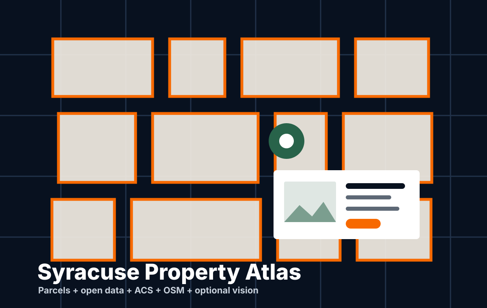

Interactive Analysis April 29, 2026
Below the Line 2026
Rebuilding the original poverty analysis with expanded metrics, peer-city baselines, and careful notes on COVID-era data quality.
Syracuse civic data lab
Maps, dashboards, field notes, and data stories built around the real systems Syracuse residents touch: streets, snow, libraries, poverty, housing, and public service.
Hero image: public-domain Clinton Square / Erie Canal postcard via Wikimedia Commons.
Featured work
Six projects about the public systems, places, and questions that matter here. Each starts with a local question and shows its work.
Interactive Report
Poverty Data
An updated look at Syracuse poverty, housing, education, work, transportation, broadband access, and peer-city change since the original report.
 Live map
Live map
Snow
See where plows have been and follow snow-removal progress across Syracuse residential streets.
 Interactive data
Interactive data
Libraries
Compare the communities around Onondaga County library locations using Census data and library context.
 Service-request guide
Service-request guide
Civic Services
Describe a city-service problem in plain language and find the closest currently available Cityline request path.

Property researchProperty Data
Explore a Syracuse parcel with city records, neighborhood context, mapping data, and clearly marked gaps.
Water infrastructure
A transparent public-data model for examining which street segments were most likely to have a recorded water-main break in a given year.
More from DataCuse
Work that remains available for reference, without competing with the current project desk.
Field notes
Long-form analyses from the local data stack, kept close to the project pages they explain.
Interactive Analysis April 29, 2026
Rebuilding the original poverty analysis with expanded metrics, peer-city baselines, and careful notes on COVID-era data quality.

Library Data May 2026
A public reporting page that turns the latest city library dashboard into a readable civic data story.

Launch Essay March 21, 2026
How Syracuse open data, OCPL library workflows, and county, state, and federal sources came together in one MCP server.
Data Analysis December 31, 2025
A look at how residents make snow plow service requests to Cityline, even when there is no official option to do so.
About DataCuse
DataCuse is built by Sam Edelstein, a Syracuse civic technologist and public-board leader. It is an independent project, not an official City of Syracuse or Onondaga County website.
Have a dataset, correction, local question, or idea for a useful tool? Source notes and constructive challenges make this work better.